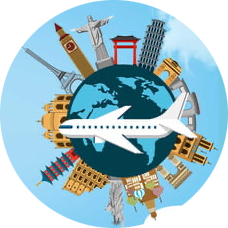

Hello.
I'm a fresh graduate Software Engineer, self learner and programmer, and A-Tech Full-Stack program student.
My Passions.
Design & Development
I started learning to code when I started my first degree as software engineering. Over time, I have gained a wealth of experience designing and developing mobile and web applications.

Traviling Around The World
Oh, let me tell you about my passion for traveling around the world! It's like a fervent flame inside me, an irresistible pull towards adventure and discovery. Traveling isn't just a hobby; it's a profound, soul-stirring experience that continuously fuels my spirit.